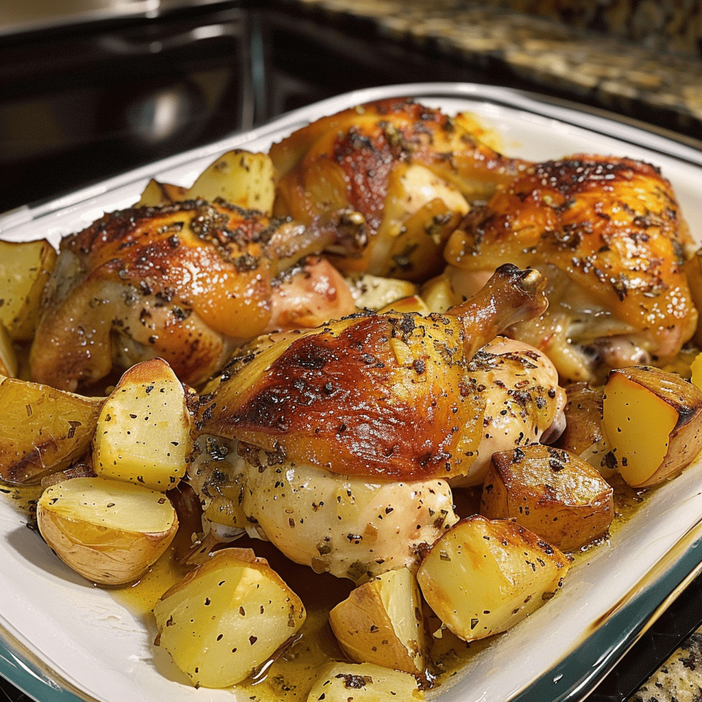

Garlic Roasted Chicken and Potatoes

Decription
This recipe is very easy to adjust up or down. Just make sure your pan is big enough if adjusting up. I usually add more potatoes, since we like them. Serve with a mixed greens salad.
Ingredients
- ¼ cup butter
- 6 chicken leg quarters, split into drumsticks and thighs
- 6 large Yukon Gold potatoes, cut into chunks
- 24 cloves garlic, unpeeled
- salt and ground black pepper to taste
- ¼ cup maple syrup
Steps
- Preheat oven to 400 degrees F (200 degrees C).
- Place the butter into a roasting pan, and melt in the oven. When butter is melted, swirl to coat the bottom of the roasting pan, and place the chicken drumsticks and thighs, potatoes, and unpeeled garlic cloves into the pan. Sprinkle with salt and black pepper; turn the chicken, potatoes, and garlic to coat with butter.
- Bake in the preheated oven until the chicken is no longer pink inside and the juices run clear, about 40 minutes, basting 3 times with pan drippings. Brush maple syrup over the chicken pieces, and spoon pan drippings over the potatoes.
- Return to oven, and bake until the chicken and potatoes are tender and browned, about 20 more minutes. An instant-read thermometer inserted into a thick part of a thigh should read at least 165 degrees F (74 degrees C). To serve, squeeze garlic from the baked cloves, and spread the soft garlic over the chicken. Pour pan juices over chicken and potatoes.